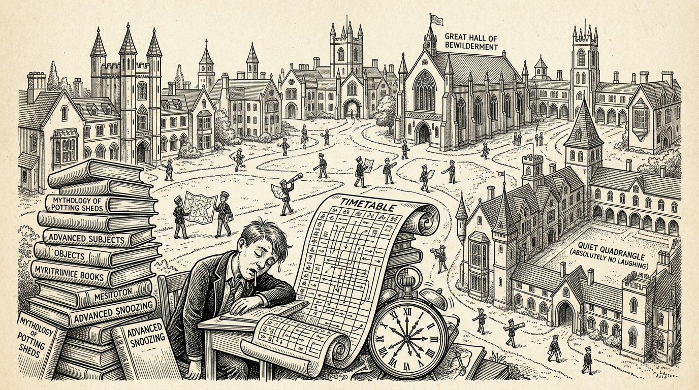
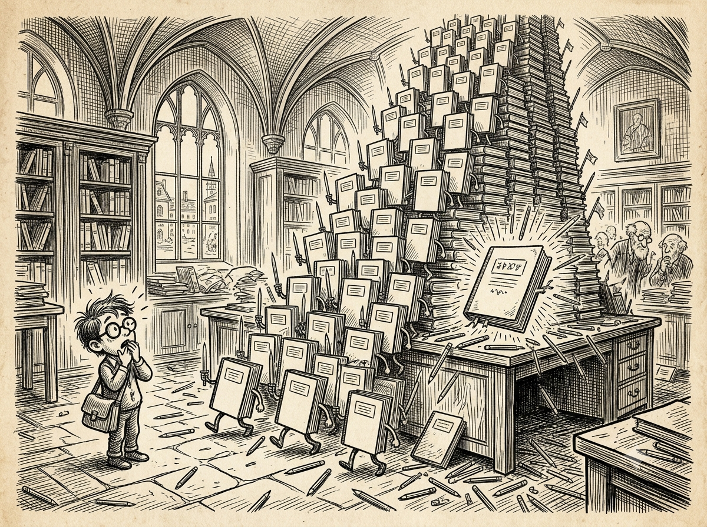
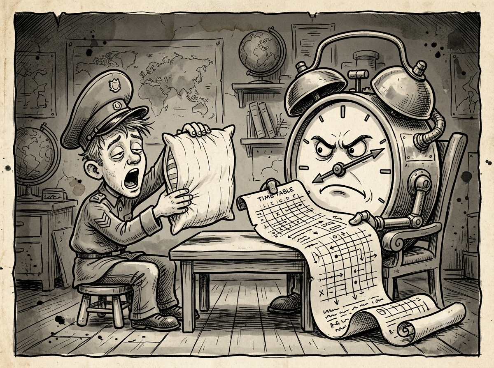

Front Page · Reports
The Campus Chronicles
A collection of campus observations, daily events, and ordinary happenings with extraordinary potential for headlines.
Visit Reports →Every headline begins somewhere. Revisit the reports, investigations, opinions, cartoons, and campus mysteries collected by SSG TIMES.

A collection of campus observations, daily events, and ordinary happenings with extraordinary potential for headlines.
Visit Reports →
Missing time, disappearing stationery, and other fictional campus mysteries investigated with suspicious seriousness.
Open Investigations →Reflections on familiar places, small moments, friendships, and the everyday details that become stories over time.
Revisit Memories →
Editorials and commentary about student life, learning, routines, responsibility, and the questions worth asking.
Read Opinions →
Illustrated jokes, exaggerated timetables, suspicious alarm clocks, and the lighter side of everyday campus routines.
Browse Cartoons →Satirical observations about routines, corridors, schedules, and the complicated science of finding a quiet moment.
Explore Coverage →No matching entries found. Try another search or category.
The beginning of SSG TIMES: a place for campus-themed satire, stories, and observations.
Fictional cases and exaggerated mysteries enter the newsroom, each treated with the seriousness of a very unnecessary inquiry.
The archive makes room for memories, familiar moments, and stories worth revisiting.
Commentary and illustration add new perspectives to the growing collection.
New submissions can bring fresh voices, original cartoons, thoughtful editorials, and fictional campus stories to the site.
Have an original story, an old campus memory, an editorial, or a cartoon? Send it to the editorial desk for consideration. Please avoid private information and unsupported claims about identifiable people.
Email: editorthessgtimes@rediffmail.com